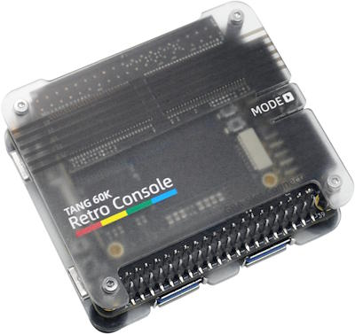
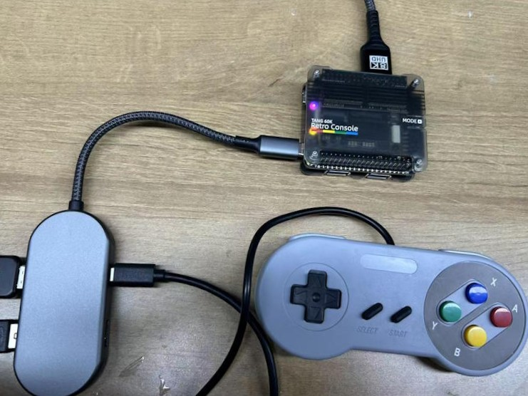
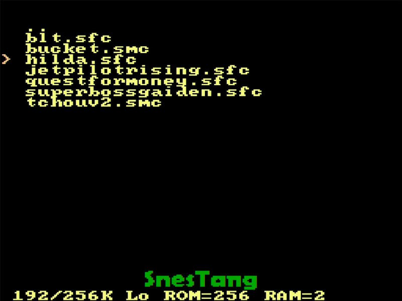

中文
中文Tang Console
更新历史
| 日期 | 版本 | 作者 | 更新内容 |
|---|---|---|---|
| 2025-04-17 | v0.1 | Serika |
|
产品概述
板卡特点
点击查看详情
支持多种Tang Core模拟器核心
- NESTang - Nintendo Entertainment System
- SNESTang - Super Nintendo Entertainment System
- GBATang - Game Boy Advance
- MDTang - Sega Genesis/Mega Drive
- SMSTang - Sega Master System
- 更多核心仍在开发中，将会陆续上线
板载BL616 MCU
- 运行TangCore firmware for BL616
- 支持模拟器核心快速切换
支持uSD卡存储(仍在调试中)- 支持USB OTG（目前需要带供电的OTG转接头或HUB）
- USB OTG存储（存放游戏ROM和模拟器核心，以及模拟器BIOS）
- USB HID手柄
- 可作为FPGA的调试器
板载两个USB-A，可用于直接连接支持的USB手柄
支持DS2手柄（需要PMOD_DS2x2）
产品外观
点击查看详情
Tang Retro Console Premium (60k version)
Tang Retro Console (60k version)

架构框图
点击查看详情
此处以60k SOM举例，138k同理


硬件参数
上手使用
此处以Tang Retro Console为例，讲解如使用Tang Console进行游玩
准备工作
需要准备的东西如下：
- Tang Console，138k或60k均可
- USB 2.0驱动器，或者SD卡+读卡器（推荐格式FAT32/exFAT，≤32GB）
- USB-C OTG 转换器，带有电源传输（推荐使用套餐中的USB-C读卡器）
- 可用的GBA原机BIOS（gba_bios.bin）
- 最新的TangCore Release Package
- 想要游玩的游戏ROM（Tang Retro Console Premium套餐包含的uSD卡中已有演示游戏）
安装MCU固件
对于已购买任何套餐Tang Console的用户来说，这一步不是必须的，因为出厂时已经完成
后续如有固件更新，请参考此处进行更新：点我
存储介质准备
无论是采用SD卡还是USB驱动器，需要确保其容量≤32GB 同时格式化为FAT32/exFAT。
存储介质的内容如下方所示：
📁 /
├── 📁 cores/ # 来自Tang Core发布版本的 `cores` 目录
│ ├── 📁 console60k/
│ └── 📁 console138k/
├── 📁 nes/ # .nes rom 目录
├── 📁 snes/ # .smc/.sfc 目录
├── 📁 gba/
│ └── 🗎 gba_bios.bin # GBA BIOS 档案
├── 📁 genesis/ # .bin/ 目录
└── 📁 sms/ # .sms 目录
⚠ Console会过滤游戏ROM的后缀名，请务必将游戏ROM改成对应的后缀名 ⚠
存储介质的内容不区分 138k console 和 60k console。其中 gba_bios.bin 需要用户自行下载后放入。
将想要游玩的游戏ROM放入对应的目录中即可。
硬件组装
❗注意：请先组装好所有配件再接通电源！
早鸟版本推荐的方式（这种方式的全部配件都包含于 Tang Console Retro Premium 中）

左侧：USB-OTG读卡器+USB-C电源 | 下方：USB手柄 P1 | 上方： HDMI输出
这种方式的好处是简洁，缺点是USB手柄这样接不太稳定
如遇到USB手柄不识别（尤其是在切换完毕模拟器core的时候），需要用户手动多拔插USB手柄几次
*零售版 Console 可以不使用 OTG 读卡器，将uSD卡装入机身自带的卡槽即可。因为 零售版 Console 机身自带的卡槽通过MUX连接到了 BL616*
零售版本推荐的方式
点击查看详情

左下：USB-OTG | 左上：USB-C电源 | 下方：USB手柄 P1 | 上方： HDMI输出
这种方式的好处是最简洁，缺点是USB手柄这样接不太稳定
如遇到USB手柄不识别（尤其是在切换完毕模拟器core的时候），需要用户手动多拔插USB手柄几次
手柄既可以连接到Console本身的USB连接器，也可以通过USB-OTG连接到BL616
USB-OTG转换器不是必须的，取决于你的用途
nand2mario的方式
点击查看详情

左侧：OTG USB驱动器+USB-C供电 | 右侧： DS2 PMOD+DS2手柄 | 顶部: HDMI输出
这种方式的好处是稳定，缺点是太臃肿
如想要连接更加简洁，请尝试使用无线DS2手柄，并更换更小尺寸的USB驱动器
USB OTG HUB的方式 {#USB_OTG_HUB}
点击查看详情
左侧：USB-C OTG HUB+USB驱动器+USB-C供电+USB手柄 P1 | 顶部: HDMI输出
这种方式的好处比较稳定，缺点是十分臃肿 & USB HUB 可能有兼容性问题
已测试的USB HUB的兼容性列表：点我
上电开机
先按照上一步中组装好机器，然后再接通电源；
等待一段时间，主菜单会出现；
点击查看详情

使用游戏手柄进行导航，上下移动游标，左右进行翻页，
B或3键确定，A或2键返回，在..上按下B键可以返回上级菜单点击查看详情
选中一个模拟器标题，如SNES，按
B键进入二级菜单，选择要游玩的游戏ROM，再次按下B键进入游戏点击查看详情

HDMI输出会暂时消失，稍等片刻出现ROM加载画面，此时画面下方的标题会变成对应模拟器的名称（本例中为 SnesTang）
点击查看详情

稍等片刻ROM加载完毕后就会进入游戏，通常此时按下
start键就可以开始游戏点击查看详情
在游戏中可以按
→+select返回主菜单部分游戏ROM可能并不完全被模拟器兼容。如果遇到了问题，给Console重新上电即可
其他资源
安装文档原文： 点我
特别鸣谢：fjpolo | harbaum | nand2mario | pgate1
以上排名不分先后
交流方式
- 交流论坛:maixhub.com/discussion
- QQ 交流群：834585530
- 电报群组：t.me/sipeed
- Discord：https://discord.gg/V4sAZ9XWpN
- 直接本页下方留言
注意事项
| 事项 | 注意事项 |
|---|---|
| 供电电压 | Tang Console 使用的 电源电压是 DC +5V
请避免供电电压超过+5.5V或低于+3.4V 请使用输出能力至少为5V/2A的USB 适配器供电 |
| 静电 | 请避免静电打到 PCBA 上，如非必要请勿随意自行拆解装置的外壳
如需拆卸外壳，在接触 PCBA 之前请把手的静电释放掉，比如用自来水洗手 |
| 容忍电压 | 使用 GPIO 排针引脚进行外部通信时，要确保 IO 电压是 3.3V，过高的电压会永久损坏 PCBA
非专业用户请勿使用排针连接官方配件以外的任何设备或模组 |
| FPC 座子 | 在连接 FPC 软排线的时候，请确保排线无偏侈地完整地插入到排线中
在通电之前请仔细核对两端FPC 连接器的 1号PIN 的方向是否正确 |
| 插拔 | 除了USB-A手柄和USB驱动器/读卡器
请完全断电后才进行配件的插拔操作 |
| USB手柄 | USB-A手柄连接到Console正面的USB-A时不太稳定
如遇USB手柄无法操作，请多插拔几次 |
| 避免短路 | 请在上电过程中，避免任何液体和金属触碰到 PCBA 上的元件的焊盘，否则会导致路，烧毁 PCBA |
联系
技术支持和商业合作请联系邮箱 support@sipeed.com
常见问题
USB手柄无法操作
点击查看详情
- 目前在 tang core version
0.8中是已知问题，请重新拔插USB手柄后再尝试操作； - Console正面的USB-A手柄的稳定性会在之后的固件更新中解决；
- 目前最稳定连接方式为PMOD DS2手柄；
- 请注意USB接口的丝印标记，位于右侧的标记为P2的手柄，有些游戏只能使用P1的手柄进行操作（使用DS2手柄时同理）；
按下MODE键后UI消失
点击查看详情
- 目前在 tang core version
0.8中是已知问题，会在未来的固件更新中解决； - 如果画面中游标
>还在，可以尝试用手柄操作翻页或返回上级等操作强迫UI刷新；
上电后显示 Waiting for USB drive...
点击查看详情
如果使用了USB HUB，这可能意味着HUB不兼容；
请确保正确连接了USB驱动器/读卡器；
请确保USB驱动器/读卡器的容量 ≤32GB，且格式化为 FAT32/exFAT；

GBATang提示 Cannot find /gba_bios.bin...
点击查看详情
这意味着 USB驱动器/存储卡 中的
/GBA目录下缺失了GBA原始的BIOS，可能会引起一些ROM的兼容性问题；因为版权问题，我们无法向您提供这份档案，您需要自行寻找
gba_bios.bin并放入相应的位置；
主菜单画面中的 *Options* 选项无法进入
更多问题及其解决办法前往Tang Core的文档中的 Troubleshooting 页面查看
如果你不幸遇到了一个全新的问题，欢迎向我们反馈。
反馈方式请参考 这里。